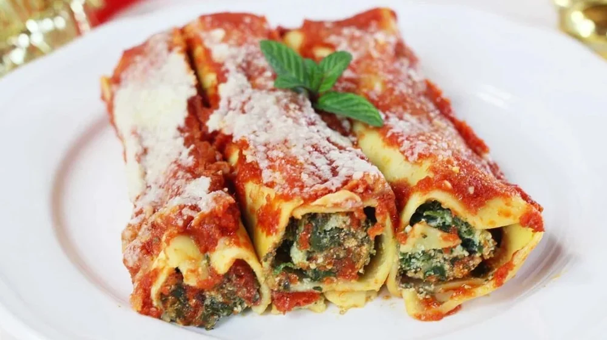
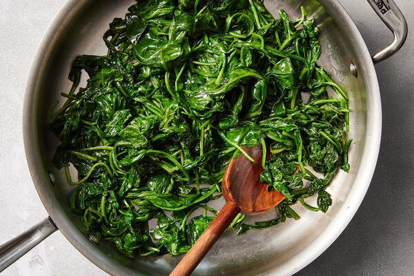
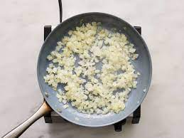
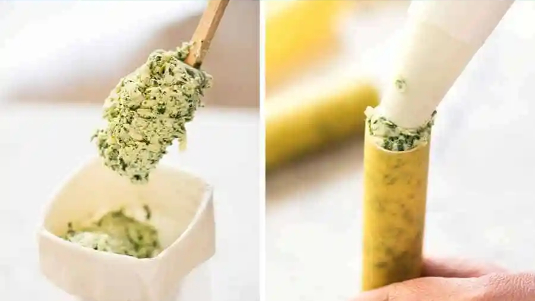
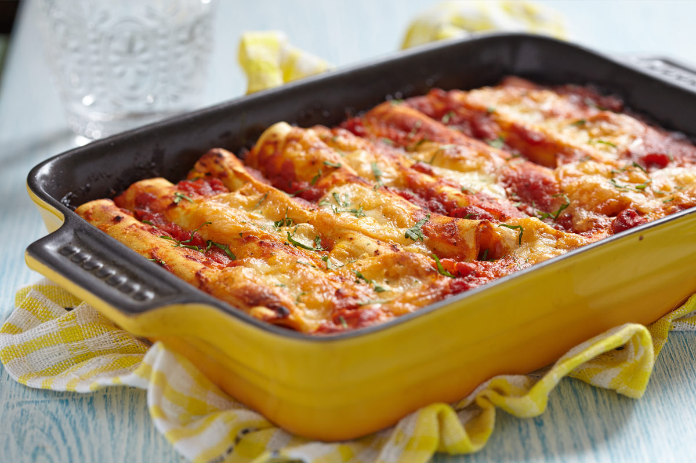

SPINACH AND RICOTTA CANELLONI

If you love the "cheesiness" of the Lasagna and the "juiciness" of the Eggplant Parmigiana you can't possibly go wrong with this dish!
Early references to maccheroni ripieni (stuffed pasta) can be traced back to 1770, but the word cannelloni seems to have appeared at the turn of the 20th century. Manicotti are the American version of cannelloni, though the term may often refer to the actual baked dish. The original difference may be that cannelloni consists of pasta sheets wrapped around the filling, and manicotti is machine-extruded cylinders filled from one end (source: Wikipedia)
Ingredients
- Spinach (400g / 14oz)
- Ricotta (250g / 9oz)
- Canelloni (150g / 5oz or about 14 tubes)
- Mozzarella (250g / 9oz)
- Egg (1)
- Crushed tomatoes(800g / 30oz)
- Onion (1)
- Garlic (2 cloves)
- Ground nutmeg (1/4 teaspoon)
- Bay leaf (1)
- Fresh basil (1/2)
- Parmesan cheese
- Lemon (1/2)
Directions
- Preheat the oven to 180°C/350°F
- In a large pan put: a drizzle of olive oil and spinach, keep on low heat
- Add nutmeg, season with sea salt and black pepper, cover for and let it simmer

- Once the spinach has cooked down place everything in a bowl and set aside to coll down a little
- Dice the onion, squash the garlic and place in the same pan with another drizzle of olive oil

- Scrunch in the tomatoes through your hands and add the garlic and bay leaf
- Pick in a few basil leaves and grate in the zest of the lemon half, then let it gently simmer for 20 minutes until the sauce has thickned.Season with salt and pepper
- Squeeze the moisture out of the spinach into the bowl, place the spinach on a board so you can chop it up.Return the spinach to the liquid in the bowl

- Beat the egg and grate 2 teaspoons of Parmesan cheese. Get the kids to stir the ricotta, egg and Parmesan into the spinach. Season to taste
- Sit a piping bag in a jug, fold its edges over the rim, the spoon in the spinach mixture.Pipe the mixture into the cannelloni tubes and lay them in a 20x25cm / 7.87x9.84-inches oven dish

- Spread the tomato sauce over the cannelloni. Pick the remaining basil leaves and scatter most of them over tomato sauce
- Slice the mozzarella and lay the slices on top, drizzle with extra-virgin olive oil and season
- Place in the oven and cook for 35-40 minutes or till the top is golden and the pasta tender (if the top browns too fast, cover the dish with foil)
- Remove from the oven and let stand for a few minutes before serving with the remaining basil leaves
